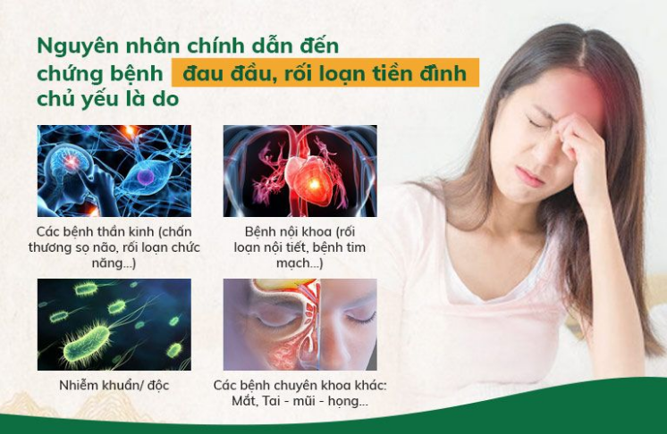

Đau Lưng Lan Xuống Chân Là Bệnh Gì? – Cách Điều Trị Tốt Nhất
Nguyên nhân yếu sinh lý nam là một trong những vấn đề được tất cả mọi người quan tâm. Theo các chuyên gia, nếu muốn điều trị bệnh dứt điểm, cần xác định chính xác lý do gây bệnh. Một số yếu tố được cho là tác nhân gây yếu sinh lý ở cánh mày râu đó là:
Khái Niệm Bệnh
Nguyên nhân yếu sinh lý nam là một trong những vấn đề được tất cả mọi người quan tâm. Theo các chuyên gia, nếu muốn điều trị bệnh dứt điểm, cần xác định chính xác lý do gây bệnh. Một số yếu tố được cho là tác nhân gây yếu sinh lý ở cánh mày râu đó là:
Đa phần, bệnh nhân đau đầu, tiền đình đều đang chủ quan, xem nhẹ triệu chứng và bỏ qua giai đoạn điều trị tốt nhất ban đầu nên quá trình phục hồi về sau thường dai dẳng, mất thời gian.
Thay vì tìm đến bác sĩ chuyên khoa, bệnh nhân thường có xu hướng tự ý đoán bệnh, xử lý bằng các mẹo dân gian hoặc các phương pháp khác mà không có cơ sở. Vậy nên bệnh ngày càng nặng, nguy cơ đối mặt với các biến chứng nguy hiểm càng cao, nhất là khi xử lý không đúng nguyên nhân.
Nếu không có biện pháp giải quyết kịp thời các chứng ĐAU ĐẦU, ĐAU NỬA ĐẦU, sau một thời gian dài người bệnh có thể sẽ bị đãng trí, hay quên, lo âu, thiếu tập trung, rối loạn trí nhớ, trầm cảm… thậm chí là gây sa sút trí tuệ và TĂNG NGUY CƠ BỊ ĐỘT QUỴ, TAI BIẾN dẫn đến những di chứng nặng nề không mong muốn.
Đối với TIỀN ĐÌNH, trong quá trình phát bệnh, nếu bệnh nhân chủ quan, vẫn cố gắng đi lại và hoạt động bình thường có thể sẽ bị ngã, gây chấn thương và nguy hiểm nhất là khiến máu lên não kém, TĂNG NGUY CƠ BỊ TAI BIẾN MẠCH MÁU NÃO/ ĐỘT QUỴ (tỷ lệ tử vong lên đến 50%).
Triệu Chứng
Tình trạng thoái hóa xương khớp thường có những biểu hiện khá cụ thể và dễ nhận biết. Hãy dựa vào những triệu chứng dưới đây và nhanh chóng đi thăm khám để phát hiện bệnh sớm. Từ đó có biện pháp xử lý phù hợp, phòng tránh những biến chứng về.
Đau nhức các khớp xương
Đau nhức là triệu chứng điển hình, gặp ở đại đa số người bệnh. Thông thường, mức độ đau nhức khi bị thoái hóa được chia ra làm 2 giai đoạn:
- Giai đoạn đầu: Cơn đau xuất hiện âm ỉ, râm ran, người bệnh có cảm giác nhói đau tại vị trí khớp và thường có xu hướng đau nặng hơn khi vận động.
- Giai đoạn sau: Các triệu chứng đau xuất hiện nhiều hơn với cường độ mạnh hơn, có thể xuất hiện liên tục mỗi ngày khi thời tiết trở lạnh, cả trong quá trình vận động lẫn nghỉ ngơi. Đau ngay tại 1 vị trí kèm theo tê bì ra các vùng xung quanh.
Tình trạng đau cũng xảy ra với mức độ khác nhau tại các vị trí thoái hóa khớp khác nhau. Ở khớp chính như khớp gối, khớp háng, khớp vai thường đau nhiều hơn so với các khớp nhỏ ở bàn tay, bàn chân,…
- Tiếng kêu ở khớp khi cử động: Sụn khớp bị hao mòn, lượng dịch bôi trơn khớp tiết ra ít dần, từ đó làm cho khớp xương bị khô. Khi di chuyển, vận động, các đầu xương sẽ cọ xát trực tiếp vào nhau và phát ra tiếng kêu lục khục bên trong khớp.
- Bị sưng, cứng khớp: Tình trạng cứng khớp thường xuất hiện nhiều hơn vào buổi sáng sớm khi tỉnh giấc hoặc sau khi vận động thời gian dài. Khi bệnh chuyển biến nặng, các khớp xương có thể bị sưng lên làm gia tăng tình trạng đau nhức và cứng khớp.
- Biến dạng khớp xương: Thoái hóa xương khớp kéo dài sẽ gây nên một số biến chứng ở khớp xương như: biến dạng các khớp ngón tay, ngón chân bị cong vẹo, đầu gối lệch trục, vai xệ,…
- Hạn chế vận động: Các biểu hiện bệnh thoái hóa khớp gây đau khiến người bệnh cử động và di chuyển gặp nhiều khó khăn. Trong trường hợp bệnh diễn tiến nặng, người bệnh có thể phải nằm một chỗ mà không vận động hay đi lại được. Lâu dần các cơ không được vận động có thể dẫn tới tình trạng teo cơ, mất chức năng vận động.
Biến chứng
Đa phần, bệnh nhân đau đầu, tiền đình đều đang chủ quan, xem nhẹ triệu chứng và bỏ qua giai đoạn điều trị tốt nhất ban đầu nên quá trình phục hồi về sau thường dai dẳng, mất thời gian.
Thay vì tìm đến bác sĩ chuyên khoa, bệnh nhân thường có xu hướng tự ý đoán bệnh, xử lý bằng các mẹo dân gian hoặc các phương pháp khác mà không có cơ sở. Vậy nên bệnh ngày càng nặng, nguy cơ đối mặt với các biến chứng nguy hiểm càng cao, nhất là khi xử lý không đúng nguyên nhân.
Nguyên Nhân
- Tuổi tác: Quá trình lão hóa của cơ thể gia tăng theo tuổi tác, vì vậy, tuổi càng cao thì tỉ lệ thoái hóa xương khớp càng tăng.
- Di truyền: Bệnh nhân có người thân mắc các triệu chứng bệnh về thoái hóa thường có tỉ lệ mắc bệnh cao hơn so với bình thường.
- Do chấn thương: Một số chấn thương như: Rách vỡ sụn khớp, trật khớp, chấn thương dây chằng,… cũng là mối nguy hại khiến người bệnh bị thoái hóa khớp.
- Chế độ ăn uống không hợp lý: Chế độ dinh dưỡng không đảm bảo sẽ không cung cấp đủ lượng canxi và các dưỡng chất thiết yếu cho xương, khiến xương dần yếu đi, dễ bị tổn thương và thoái hóa.
- Tính chất công việc: Một số đặc thù công việc như: Công việc văn phòng phải ngồi nhiều, sử dụng máy tính nhiều; Công việc lao động chân tay thường xuyên phải khuân, vác;… Những hoạt động này lặp đi lặp lại thường xuyên và với cường độ cao sẽ tạo áp lực đè nén lên hệ xương khớp, gây ra tình trạng thoái hóa.
- Thừa cân béo phì: Khi bị thừa cân, béo phì sẽ khiến cho các khớp bị chịu đựng một trọng lượng quá nặng, nhất là ở khớp gối và khớp háng
- Hoạt động sai tư thế: Những người làm việc nặng, làm việc sai tư thế, làm việc với cường độ cao trong thời gian dài khiến cho hệ xương khớp bị tổn thương dẫn tới thoái hóa.
- Mắc một số bệnh lý: Các bệnh lý thường là nguyên nhân dẫn đến thoái hóa xương khớp là loãng xương, viêm khớp, tiểu đường, bệnh gout,… Ngoài ra, bệnh nhân lạm dụng thuốc có chứa thành phần corticoid để điều trị bệnh cũng là đối tượng rất dễ bị thoái hóa ở xương khớp.
Đây đều là những nguyên nhân rất thường gặp trong cuộc sống hàng ngày. Vì thế người bệnh cần chú ý cẩn thận để chủ động phòng tránh bệnh xảy ra.
Bình Luận
Nội dung bình luận


Chỉ mà cấy vào cơ thể có gây hại gì không mọi người? Chỉ kiểu giống chỉ mà khâu vết thương á, em mới biết tới phương pháp này thấy ghê ghê á, không biết có hiệu quả không vậy?
Chỉ mà cấy vào cơ thể có gây hại gì không mọi người? Chỉ kiểu giống chỉ mà khâu vết thương á, em mới biết tới phương pháp này thấy ghê ghê á, không biết có hiệu quả không vậy?
Chỉ mà cấy vào cơ thể có gây hại gì không mọi người? Chỉ kiểu giống chỉ mà khâu vết thương á, em mới biết tới phương pháp này thấy ghê ghê á, không biết có hiệu quả không vậy?
Chỉ mà cấy vào cơ thể có gây hại gì không mọi người? Chỉ kiểu giống chỉ mà khâu vết thương á, em mới biết tới phương pháp này thấy ghê ghê á, không biết có hiệu quả không vậy?
Chỉ mà cấy vào cơ thể có gây hại gì không mọi người? Chỉ kiểu giống chỉ mà khâu vết thương á, em mới biết tới phương pháp này thấy ghê ghê á, không biết có hiệu quả không vậy?
Chỉ mà cấy vào cơ thể có gây hại gì không mọi người? Chỉ kiểu giống chỉ mà khâu vết thương á, em mới biết tới phương pháp này thấy ghê ghê á, không biết có hiệu quả không vậy?
Chỉ mà cấy vào cơ thể có gây hại gì không mọi người? Chỉ kiểu giống chỉ mà khâu vết thương á, em mới biết tới phương pháp này thấy ghê ghê á, không biết có hiệu quả không vậy?